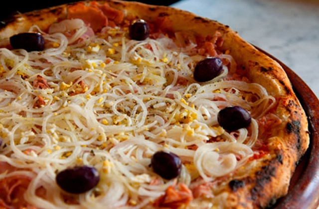
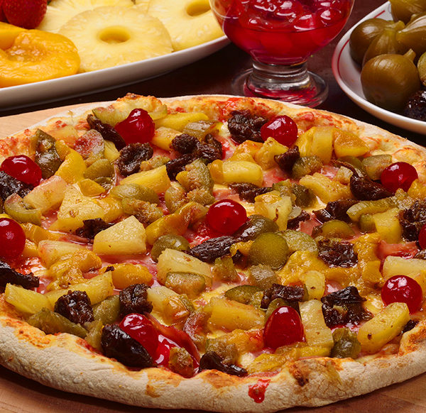
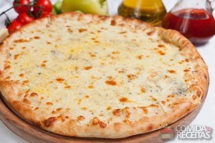
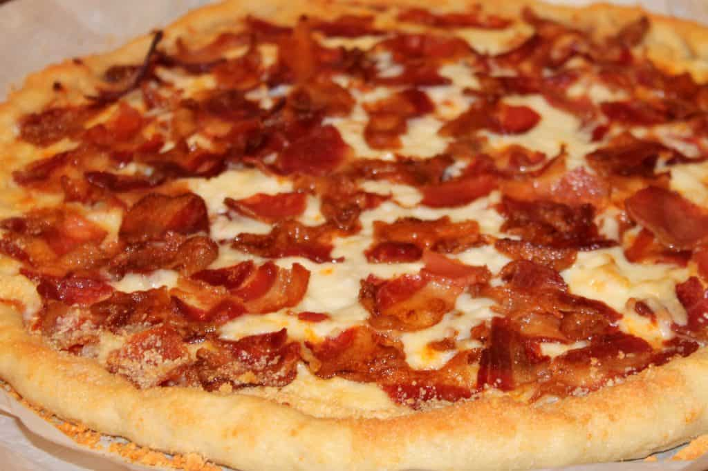

Pizza
Pizza
Pizza é uma preparação culinária que consiste em um disco de massa fermentada de farinha e trigo, regado com molho de tomate e coberto com ingredientes variados que normalmente incluem algum tipo de queijo, carnes preparada ou defumada e ervas, normalmente
orégano ou manjericão, tudo assado no forno.
Alguns tipos de sabores
A variedade de cobertura que se pode colocar sobre uma pizza é quase infinita, entretanto, algumas preparações são tradicionais e têm fiéis seguidores:
 Margherita
Margherita Mussarela
Mussarela- Portuguesa
 Calabresa
Calabresa- Califórnia
 Pepperone
Pepperone- Quatro queijos
- Bancon
Fontes
- http://pt.wikipedia.org/wiki/Pizza
- http://www.pizza.it
- http://en.wikipedia.org/wiki/History_of_pizza
www.pizzaonline.com.br